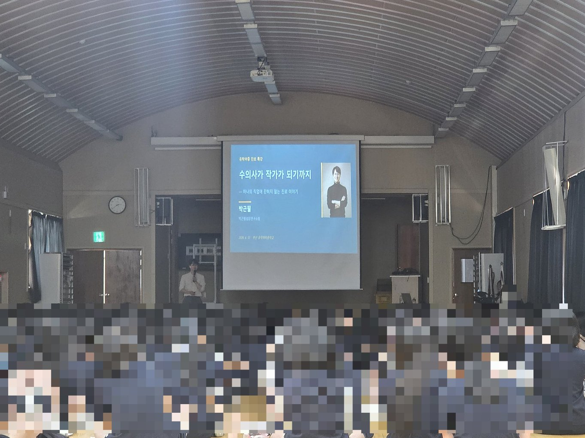
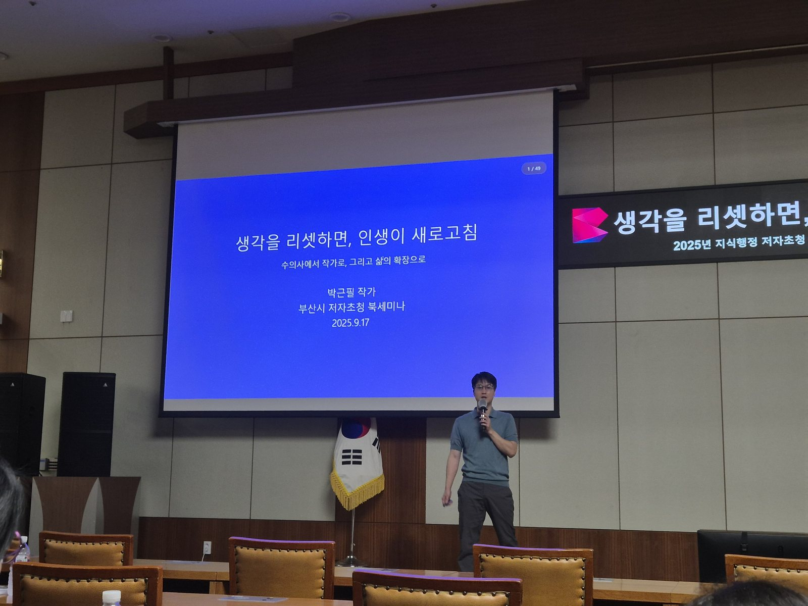
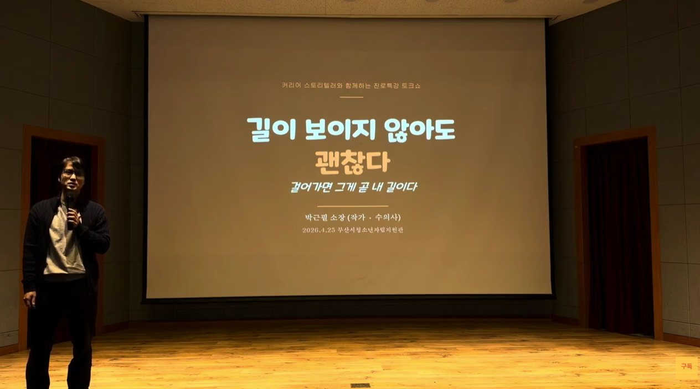
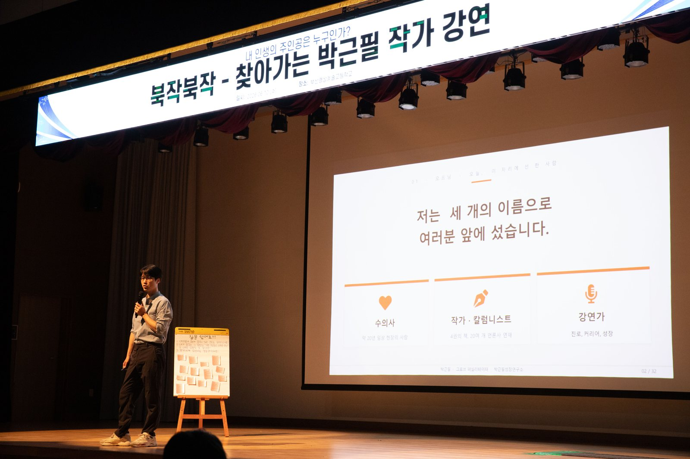
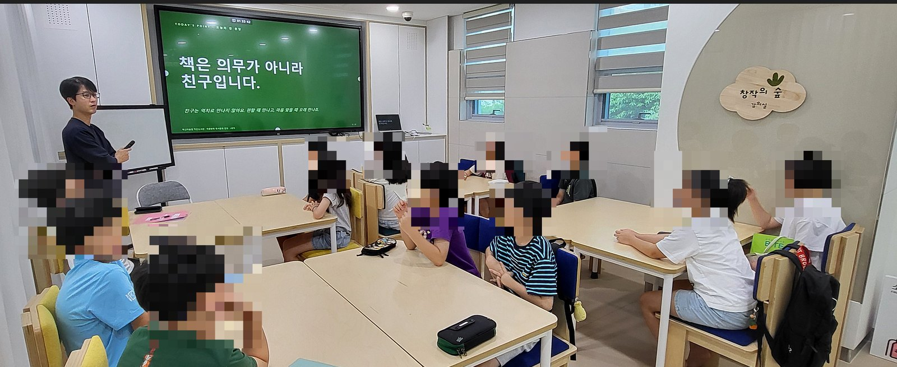
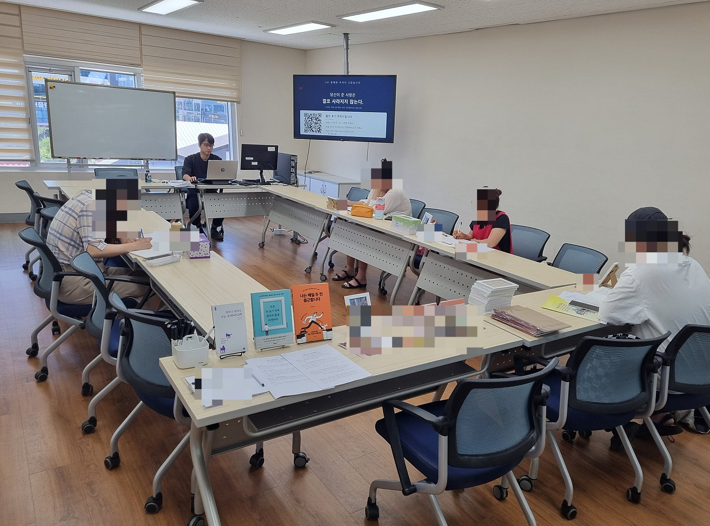
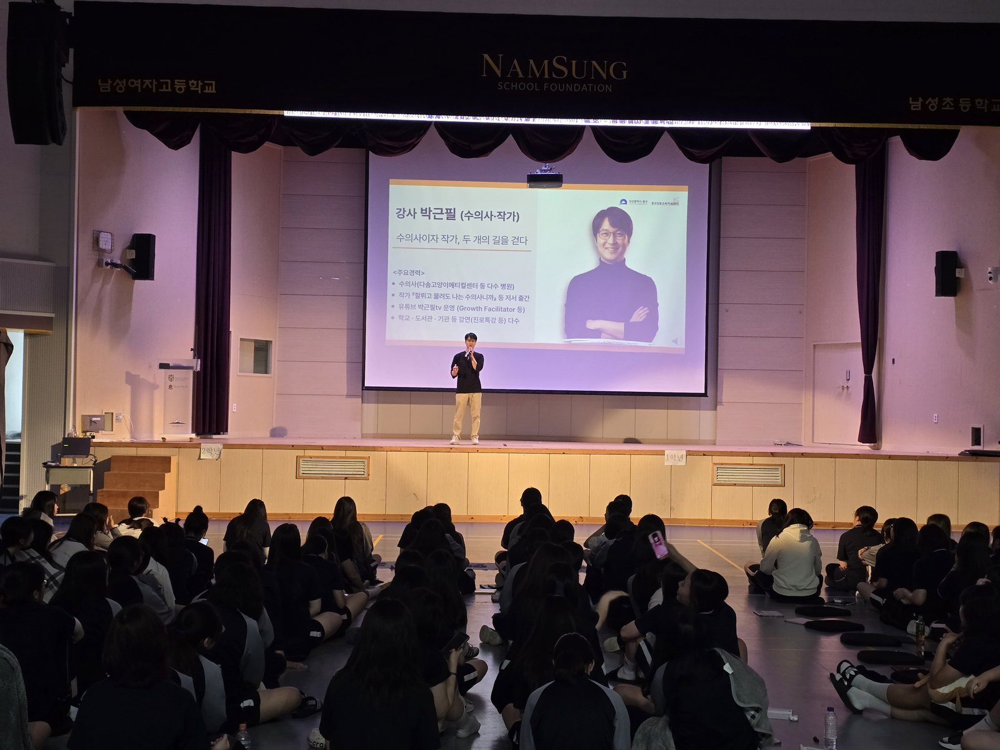
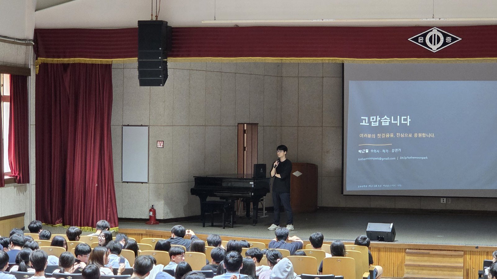

밤에는 동물병원에, 낮에는 강연장에
지금도 두 번 출근하는 사람이 이야기합니다
20년 가까이 임상 수의사로 일하고 있습니다. 마흔에 번아웃으로 제 병원을 정리했고, 그 자리에서 책을 읽고 글을 쓰기 시작했습니다. 지금은 수의사와 작가·강연가를 함께 하며 다섯 권의 책을 냈고, 전국 학교와 기업·기관에서 진로와 커리어를 이야기합니다. 그만두고 떠난 사람의 이야기가 아니라, 지금도 현장에서 두 가지 일을 살아내고 있는 사람의 이야기입니다.
2분 21초 소개 영상 — 실적과 섭외한 곳에서 온 말
어떤 강연을 찾으시나요
대상은 여럿이어도 하는 말은 하나입니다. 나이와 상관없이 늘 세 가지를 말합니다 — 직장인에서 직업인으로 · 병행하는 삶 · 평생 현역. 직업을 이름이 아니라 그 일을 살아가는 사람으로 보라는 관점과, 읽고 쓰고 말하는 힘이 그 길을 낸다는 방법으로 풀어냅니다. 10대에게는 「진로독서」, 일하는 사람에게는 「직무 문해력」, 다시 시작하는 사람에게는 「평생 현역」으로 부를 뿐 같은 근육의 다른 나이대입니다.
대상과 주제에 따라 안내가 나뉘어 있습니다. 해당하는 곳부터 보십시오.
※ 기업·기관 커리어 강연, 교원 직무연수, 북토크는 아래에서 이어집니다.
왜 박근필인가
강연자는 많습니다. 아래 셋은 흔치 않습니다.
직접 건너온 사람
직업 전환을 이론으로 배운 사람이 아니라 실제로 통과한 사람입니다. 번아웃, 폐업, 마흔의 재시작까지 — 말할 수 있는 것이 이론이 아니라 경험입니다. 청중이 가장 먼저 알아채는 차이입니다.
공적으로 검증된 강사
부산시교육청영재교육진흥원이 교사를 대상으로 하는 직무연수 강사로 섭외했습니다. 부산시청 공무원 200여 명 특강, 경향신문 인터뷰, 방송 출연까지 — 검증을 외부에서 받았습니다.
말하기가 본업인 사람
AI가 글은 대신 써 줍니다. 그러나 사람 앞에 서서 눈을 맞추고 주고받는 말은 대신하지 못합니다. 2년간 60여 명을 직접 인터뷰해 온 진행자입니다. 카메라 앞에서도, 550명 강당에서도 흔들리지 않습니다. 원고를 읽는 강연이 아니라 청중과 주고받는 강연을 합니다.
한 번이 아니라 과정으로 설계합니다
한 시간짜리 특강은 여운을 남기지만, 사람을 바꾸는 것은 여러 주에 걸친 과정입니다. 김해율하도서관 성인 4주 과정을 전 회차 완주했고, 혁신어울림 작은도서관은 여름 4회에 이어 하반기 6회를 맡겼습니다. 부산진구 기적의 도서관 4주, 큐리어스 5회 연속 강의도 마쳤습니다. 회차마다 산출물이 남도록 설계해, 중간에 빠져나가지 않는 과정을 만듭니다.
다시 부르고, 다른 곳에 소개합니다
강연이 좋았는지는 제가 말할 수 없습니다. 부른 쪽이 하는 행동으로 드러납니다.
기회가 기회를 부르고, 사람이 사람을 부르고, 경력이 경력을 부릅니다.
첫 수업만 보고 6회를 더 맡긴 도서관
혁신어울림 작은도서관 여름 강좌 1회차를 마친 이틀 뒤, 도서관에서 먼저 하반기 6회 강좌를 제안했습니다. 네 번의 수업을 다 지켜보기도 전에 결정한 것입니다.
이듬해 같은 학교가 다시
부산여중(2025→2026), 김해 수남중(2025→2026), 대명여고(2025→2026). 담당 선생님이 바뀌어도 학교가 다시 부른 경우입니다.
교육청 연수는 동료 추천으로 열렸습니다
부산시교육청영재교육진흥원 교원 직무연수 섭외 당시, 어떻게 알고 연락했는지 물었습니다. 돌아온 답은 “동료 연구원 선생님께서, 요즘 특강하시는 핫한 분이시라고 추천을 해줬다”였습니다.
기관이 기관에 건넨 이름
김해서부청소년센터가 개관 1주년 청소년 진로 멘토링에 저를 부른 경로는 김해진로교육지원센터의 소개였습니다. 소개는 소개하는 쪽이 자기 이름을 함께 얹는 일이라, 어지간해서는 하지 않습니다.
※ 모든 곳이 다시 부르지는 않습니다. 다만 다시 부른 곳과 소개해 준 곳이 꾸준히 있다는 것, 그것이 제가 내놓을 수 있는 가장 정직한 근거입니다.
섭외하신 분들이 보내온 말
강연이 끝난 뒤 담당 선생님·사서·담당자께서 직접 보내 주신 메시지입니다.
“저도 섭외 하게 되어 아주 감사합니다.
부산시교육청영재교육진흥원 · 담당 연구사
다음에도 모셔보도록 하겠습니다!”
“아이들 오늘 독서, 글쓰기를 열심히 하는 아이들이 더 많이 생겼습니다.”
인천 계양중학교 · 담당 선생님
“정말 많이 애써주셨습니다.^^ 소장님 덕분에 따뜻한 분위기로 참가자분들께 의미있는 시간 드릴 수 있었어요. 항상 하시는 일 잘 되시고 다음에 또 다른 기회로 함께 수업 진행하면 좋겠습니다~ 건강하세요!^^”
김해율하도서관 · 담당 사서 (펫로스 치유 글쓰기 4주)
“오늘 수고 많으셨습니다. 뜻 깊은 강연 덕분에 오늘 글로벌멘토링프로그램이 더욱 빛이 날 수 있었습니다.”
부산 중구진로교육지원센터 · 담당자 (남성여자고등학교 글로벌 멘토링 콘서트 · 1·2학년 210여 명)
“저희야말로 직접 학교까지 오셔서 좋은 말씀 주셔서 감사합니다. 사진부 학생에게 제일 잘 나온 사진으로 골라 보내드릴게요.”
부산영상예술고등학교 · 담당 선생님
“수의사님 오늘 고생 많으셨습니다! 유익한 강의 감사합니다.”
당감도서관 · 담당 주무관
“오늘 정말 수고 많으셨습니다. 아이들은 즐겁게 참여한 것 같아 다행입니다.”
학산여자중학교 · 담당 선생님 (전교생 306명 진로 토크 콘서트)
※ 강연 후 담당자께서 보내 주신 메시지를 옮긴 것입니다. 개인 실명은 밝히지 않았습니다.
수강생이 남긴 말
김해율하도서관 「추억과 이별을 쓰는 펫로스 치유 글쓰기」 4주 과정을 마친 뒤 받은 후기입니다.
“너무 좋았습니다. 처음엔 많이 울었는데 쓰다보니 행복한 기억들이 쓰나미처럼 밀려와서 행복했었습니다. 4회차 동안 진행해주신 작가님께 감사드리고 이런 소중한 프로그램을만들어주신 사서님께도 감사합니다.”
“강아지에 대해 얘기나눌 시간이 없는데 내가 유별나지않다는 걸 알게되고, 진짜 힐링되는 시간이었어요. 수의사님이셔서 더 얘기가 잘통하고 수업오는시간이 기다려졌어요. 뜨거운여름날 이겨내고 오고싶은 수업이었어요. 행복했어요!”
“마침 평일에 시간이 있어서 신청하게 되었는데 장기적으로 했으면 하는 마음이 들 만큼 좋은 시간이었습니다. 나중에 또 이런 비슷한 강좌가 생기면 신청하고 싶습니다. 여러모로 따뜻한 시간이 되었던 것 같습니다. 감사합니다^_^”
“참 좋았어요! 애완견주로서 다정한 생각을 정리할 수 있게돼 자기정화를 가질 수 있는 시간이었습니다.”
“힐링되고, 즐거운 시간이었어요.”
※ 강좌 종료 후 도서관 설문으로 받은 실제 응답입니다. 표기는 원문 그대로 두었습니다.
기업·기관에 드리는 것
AI가 실무를 가져가는 시대에, 조직이 사람에게 남겨 두어야 할 역량은 좁혀졌습니다.
직원 한 사람이 대체 불가능해지면, 그것이 곧 조직의 경쟁력이 됩니다.
직장인을 넘어, 직업인으로
- 조직이 끝까지 함께 가고 싶은 직원은 어떤 사람인가
- AI가 실무를 가져가는 자리에서, 사람에게 남는 판단력
직무 문해력
- 보고서가 안 읽히는 이유, 회의가 겉도는 이유
- 읽기·쓰기를 업무 언어로 옮겨 소통 비용을 줄이는 훈련
평생 현역으로
- 중장년 재직자·전직 지원 대상
- 마흔에 무너지고 다시 세운 3년을 그대로 씁니다
이 밖에 책쓰기·출간, 퍼스널 브랜딩 과정도 진행합니다. 주제별 구성·조직 대상 실적·강사료 기준은 기업·공공기관 강연 안내에 정리해 두었습니다.
반려동물과의 이별을 다루는 자리
20년 가까이 진료실에서 그 이별을 곁에서 지켜본 수의사가 진행합니다.
슬픔의 크기는 사랑의 크기와 같습니다.
심리 상담이 아닙니다. 비슷한 마음을 가진 사람들이 모여 함께 읽고, 짧게 쓰고, 천천히 나누는 자리입니다.
만남 — 너를 소개합니다
- 우리 아이의 가장 사랑스러운 한 장면을 짧게 씁니다
- 사진 한 장으로 여는 첫 인사 — 부담 없는 톤 만들기
추억 — 너만의 작은 디테일
- 거창한 추억보다 아주 작은 한 가지에 머무릅니다
- 냄새·소리·촉감·좋아하던 자리·버릇을 오감으로 떠올리기
이별 — 가벼이도, 무겁게도 아니게
- 수의사로서 진료 현장에서 본 이별 이야기를 함께 나눕니다
- 사랑을 다한 사람에게 자책은 어울리지 않습니다 — 자책을 푸는 회차
기록 — 잊지 않는 가장 다정한 방법
- 1~3주차 글을 엮어 짧은 에세이 한 편을 손에 쥐고 돌아갑니다
- 관계는 끝나지 않는다 — 4주의 마무리
도서관이 먼저 제안했고, 전 회차를 완주했습니다
김해율하도서관 담당 사서의 제안으로 열린 성인 대상 4주 과정 「안녕, 나의 반려동물 — 추억과 이별을 쓰는 펫로스 치유 글쓰기」(2026년 7월, 회당 2시간). 4회 전 회차를 완주했고, 진행 과정이 언론에도 보도됐습니다.
진료실에서 본 이별을 말합니다
펫로스를 책으로 배운 사람이 아니라, 그 마지막 순간에 함께 있었던 수의사입니다. 상담사·치료사가 설 수 없는 자리가 여기입니다. 수강생 후기에도 “수의사님이셔서 더 얘기가 잘통하고”라는 말이 남았습니다.
꾸준히 써 온 주제입니다
데일리벳 「펫로스 앞에서 수의사가 할 수 있는 것 — 관계는 끝나지 않는다」, 뉴스프리존 「충분히 슬퍼해도 된다」, 경인열린신문 「펫로스를 대하는 자세」 등 여러 매체에 펫로스 칼럼을 연재해 왔습니다.
“정말 많이 애써주셨습니다.^^ 소장님 덕분에 따뜻한 분위기로 참가자분들께 의미있는 시간 드릴 수 있었어요. 항상 하시는 일 잘 되시고 다음에 또 다른 기회로 함께 수업 진행하면 좋겠습니다~ 건강하세요!^^”
김해율하도서관 · 담당 사서 (펫로스 치유 글쓰기 4주)
※ 4주 과정이 기본이지만, 단발 특강(60~120분)이나 6주 과정으로도 재구성해 드립니다. 성인·가족 단위 모두 진행 가능합니다. 반려동물 관련 강연으로는 부산진구 기적의 도서관 여름방학 4주 과정 「수의사가 들려주는 반려동물 이야기」, 당감도서관 가족 특강 「강아지와 행복하게 산다는 것」을 진행했고, 2026년 9월 전북대학교 수의과대학 「반려동물 한마당」 강연에 참가할 예정입니다. 반려동물 강연 안내 보기 →
강연 주제
실제로 진행한 주제들입니다. 대상·시간·목적에 맞춰 재구성해 드립니다.
직장인을 넘어, 직업인으로
- 직장인을 넘어 직업인으로 — 조직 안에서 평생 현역으로 성장하는 법
- AI 시대, 대체되지 않는 사람의 조건
- AI가 대신하지 못하는 것 — 말하는 힘
- 생각을 리셋하면, 인생이 새로고침
- 읽고 쓰고 말하는 힘이 만드는 업무 경쟁력
- 퍼스널 브랜딩 — 조직 안에서 전문성이 드러나는 사람
부산시청 공무원 200여 명 저자 특강 · KB국민은행 「KB Dream Wave 2030」 인재양성 프로그램 온라인 특강(90분) · 한국시니어TV 〈S클래스〉 「직장인이 아니라 직업인으로」 2부작 방송(8/31·9/7)
진로·직업 특강 / 진로 토크 콘서트
- 정답이 없어서, 다행이야
- 길이 보이지 않아도 괜찮다 — 걸어가면 그게 곧 내 길이다
- AI 시대 나의 진로 설계하기
- 수의사 직업 특강 / 작가 직업 특강
- 동기 부여 특강 · 북콘서트
2·3학년 550명 · 전교생 414명 · 전교생 306명 등 대규모 진행 다수 · 초등학교 1학년부터 성인까지
AI 시대, 우리 아이에게 정말 필요한 것
- AI 시대, 우리 아이에게 정말 필요한 것 (교원 직무연수)
- AI 시대, 부모가 진짜 준비해야 할 것
- 부모가 먼저 자라야 자녀가 자란다
- 아이의 문해력, 무엇부터 시작할까
부산시교육청영재교육진흥원 교원 직무연수 · 자녀교육 채널 〈0교시 부모영역〉 출연
독서 · 글쓰기 · 문해력
- 문해력·글쓰기·독서 (어린이 독서문화강좌)
- 책쓰기의 모든 것 — 연속 강의
- 책 읽고 쓰는 삶에 대하여
- 펫로스 치유 글쓰기 — 추억과 이별을 쓰다
- 독서와 글쓰기로 브랜딩하기
김해율하도서관 4주 완주 · 혁신어울림 작은도서관 여름·하반기 연속 섭외 · 부산진구 기적의 도서관
수의사가 들려주는 이야기
- 강아지와 행복하게 산다는 것
- 수의사가 들려주는 반려동물 이야기
- 펫로스 — 잘 떠나보내고, 다시 사랑하기
- 수의사의 퍼스널 브랜딩 (수의사 대상)
ONN TV 〈신비한 동물 사전〉 고정 출연 · 전북대 수의과대학 강연 · 데일리벳 칼럼 연재
북토크 · 저자 초청 특강
- 『마흔 더 늦기 전에 생각의 틀을 리셋하라』 — 생각의 틀 리셋
- 『나는 매일 두 번 출근합니다』 — 본업과 두 번째 일
- 『당신의 원고는 왜 계약되지 않는가』 — 책쓰기 8할은 기획
- 『방구석에서 혼자 읽는 직업 토크쇼』 — 청소년 진로
교보문고·예스24 자기계발 온라인 일간 베스트셀러 1위 저자 · 매년 신간 출간
대표 실적
2026.8 기준입니다. 전체 이력은 소장소개에서 확인하실 수 있습니다.
강연 현장
학교 대강당부터 소규모 워크숍까지, 실제 강연 모습입니다.









강연 영상
실제 강연 현장과 방송·인터뷰 출연 모습입니다.
진행 안내
아래는 일반적인 기준이며, 기관 사정에 맞춰 조정 가능합니다.
| 대상 | 초·중·고 학생 / 교사·학부모 / 기업 임직원 / 공공기관·도서관 / 성인 일반 |
|---|---|
| 강연 시간 | 45분 · 60분 · 90분 · 100분 (2회 연속 진행, 연속 회차 프로그램 모두 가능) |
| 규모 | 소규모 학급 단위부터 2·3학년 550명 대강당까지 모두 진행 경험 있음 |
| 형식 | 강연형 · 토크 콘서트형 · 북콘서트형 · 연속 강좌(4~6회) · 온라인 줌 · 영상 촬영형 |
| 지역 | 부산 거주 · 전국 출강 가능 (서울·인천·충북·경남 등 진행 이력) |
| 준비 사항 | 노트북·빔프로젝터·마이크 (자료는 사전 발송, 기관 서식 강의계획서 작성 가능) |
| 강연료 | 기관 예산과 대상·시간·규모에 맞춰 협의합니다. 예산 범위를 알려주시면 그에 맞는 구성으로 제안해 드립니다. 공공기관·도서관 등 기관 기준 단가가 정해져 있는 경우 그에 따릅니다. |
| 문의 후 절차 | 문의 접수 → 주제·대상·시간 협의 → 구성안 제안 → 확정 → 자료 사전 발송 |
자주 묻는 질문
섭외 담당자분들이 실제로 가장 많이 물어보신 것들입니다.
어떤 대상에게 강연하시나요?
초·중·고 학생 진로·직업 특강, 교사 대상 교원 연수, 학부모 특강, 기업·공공기관 임직원, 도서관 성인 강좌까지 모두 진행합니다. 2·3학년 550명 대강당부터 학급 단위까지 규모를 가리지 않습니다.
강연 시간은 어떻게 되나요?
45분·60분·90분·100분(2회 연속) 모두 가능하고, 4~6회 연속 과정으로도 설계합니다. 연속 과정은 회차마다 산출물이 남도록 만들어 중도 이탈이 적습니다.
어느 지역까지 출강하시나요?
부산 거주이며 전국 출강 가능합니다. 서울·인천·충북·경남 등 진행 이력이 있고, 비대면 줌 강연도 진행합니다.
강연료는 어떻게 되나요?
기관 예산과 대상·시간·규모에 맞춰 협의합니다. 예산 범위를 알려주시면 그에 맞는 구성으로 제안해 드립니다. 기관 기준 단가가 정해져 있는 경우 그에 따릅니다.
어떤 주제로 강연하시나요?
독서·문해력, 글쓰기, 책쓰기, 퍼스널 브랜딩, 진로·직업 탐색, 펫로스 치유 글쓰기를 다룹니다. 대표 강연은 「직장인을 넘어, 직업인으로 — 대체 불가능한 인재 되기」입니다.
섭외는 어떤 절차로 진행되나요?
문의 접수 → 주제·대상·시간 협의 → 구성안 제안 → 확정 순으로 진행합니다. 기관 서식 강의계획서 작성이 가능하고 자료는 사전 발송해 드립니다.
수의사인데 왜 진로·커리어 강연을 하시나요?
마흔에 번아웃으로 운영하던 동물병원을 정리하고 독서와 글쓰기로 다시 시작했습니다. 커리어 전환을 이론으로 배운 사람이 아니라 통과한 사람입니다. 지금도 수의사와 작가·강연가를 함께 하고 있습니다.
강연을 검토 중이시라면
대상과 인원, 희망 날짜만 알려주시면 그에 맞는 구성안을 제안해 드립니다.
아직 주제가 정해지지 않았어도 괜찮습니다. 함께 잡아 드립니다.